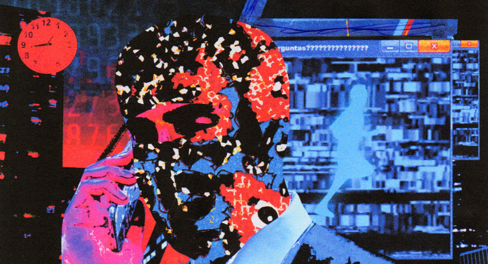

RENNOAR — Psicotropical
Sobre RENNOAR & o EP
Parte de uma nova onda de artistas brasileiros que misturam indie psicodélico e bedroom pop com a herança musical brasileira, o trabalho de RENNOAR se dá através da compreensão do movimento cotidiano sob a lógica dos fractais. O EP de estreia Psicotropical traz uma visão cosmológica sobre o corre do dia a dia e a sensibilidade e malemolência humana em meio ao caos, resultando no surrealismo lúcido que marca as obras.
Responsável pela produção musical dos lançamentos dos artistas Rio-Juá, Keruv e outros, Caio Rennó tem também um histórico de trabalhos com grandes artistas da cena LGBTQIAPN+ como CHAMELEO, Jup do Bairro, Cyberkills e Mia Badgyal.
Ouça agora nas principais plataformas: